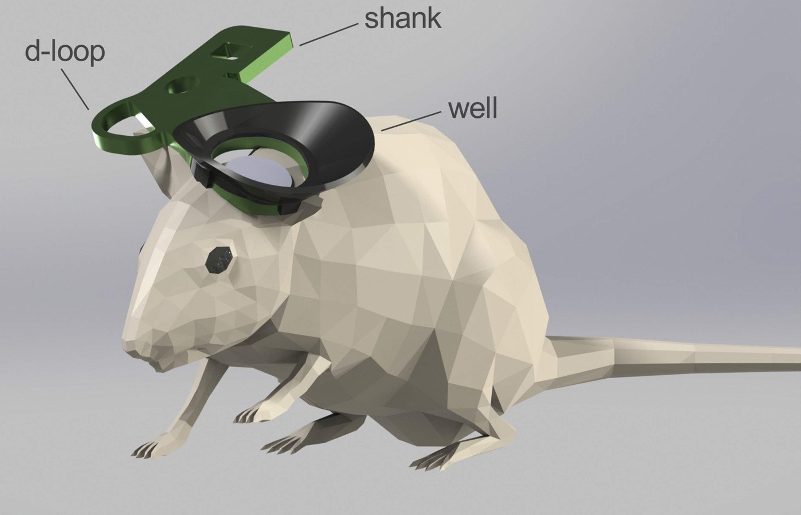
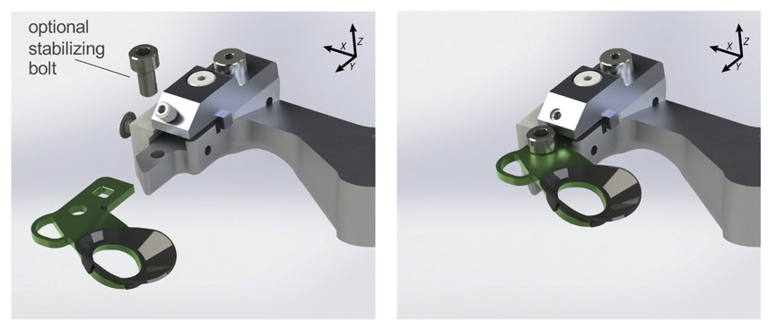
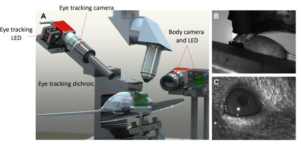
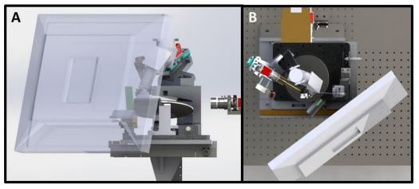

Behavioral apparatus#
Neurons in the visual system often have spatially selective receptive fields, that is, they tend to respond to stimuli shown in a particular part of visual space. In order to repeatably show stimuli to a mouse, the mice need to be head-fixed. For all the datasets described here, this means that mice have had a head bar that was surgically implanted prior to the experiment. For more details about head bar see Groblewski et al. [2020].
{kind=link}

Fig. 4 A mouse with the head bar. Image from Groblewski et al. [2020].#
This head-bar can clamped into a recording setup and go back to nearly the same location for each clamp cycle. The clamp used in these experiments does so with < 10um precision. This level of precision is particularly important in Ca2+ imaging experiments, because it allows the experimenter to reliably return to the same cells across multiple sessions. Further, in experiments that include ISI, it allows for targeting recordings to specified structures.
{kind=link}

Fig. 5 System for clamping a head bar with high positional accuracy. Image from Groblewski et al. [2020].#
Head fixation allows two things.
First, this reliability allows the mouse to be reproducibly positioned on a rig. For the datasets presented here, the mouse will be placed on a running wheel in front of a screen. A set of cameras monitor the mouse’s face, eye position, and pupil size. For more information, see the Allen Brain Observtory white paper.
{kind=link}

Fig. 6 Mouse on behavioral apparatus. While the setup shown here is for the Visual Coding 2-photon experiment, a similar one was used for all the datasets here.#
A screen is positioned in the center of gaze of the mouse’s right eye, which then presents stimuli at specific locations in the mouse’s field of view.
{kind=link}

Fig. 7 The second benefit of head fixation is that it holds the mouse’s head in place to facilitate neural recordings.#